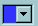
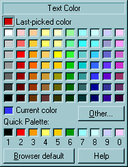
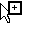
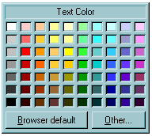

|
|
Color Picker Widget
This will be implemented as an XPFE widget to be used by all Communicator
modules that require color selection. We will probably enhance the widget
for use in Ender/Composer to match the features we added during the Gromit
(MozillaClassic) project. This document describes that implementation,
not the version in Communicator 4.x or earlier. See Enhancements
below for suggestions to simplify the widget for general use.
For convience, the UI element that is clicked on to change a color
is refered to as the "color button" and the actual color picker that popup
up below the button is referred to as the "color picker."
| Windows: |
Mac: |
UNIX: |
 <=
the "color button"
 |
|
|
Invoke
-
Click on the color button on the toolbar. This button looks like
a closed combobox with the current text color in the area to the left of
the down arrow. The "color picker" should display just below the button,
as shown above, unless this would place the picker's bottom border below
the bottom of the screen. In that case, the picker should be located above
the color button (aligned along left edge of each.) We should also check
if the right edge is past the edge of the screen (we don't currently, so
its possible to launch it off the right edge.) Move the widget so the right
edge aligns with the right screen edge in this case.
-
Press the Alt key down while clicking on the toolbar color button to set
a background color. The type of background color set depends on the location
of the caret or what is selected:
-
In a table cell or a cell is selected: Cell Background
-
Table is selected: Table Background
-
Anywhere that is not in a table cell: Page Background.
-
Window Menu: Format | Text Color... to change text color (brings up color
picker in same location as if you clicked on the toolbar button.)
-
From the Page Properties dialog (Format | Background and Page Colors):
Click on one of the color buttons for Text, Link Text, Active Link Text,
Followed Link Text, or Background colors.
-
From the Table Properties dialogs (Table | Properties): In both the Table
and Cell panes, there is a color button to set the table or cell background
respectively.
The color picker behaves exactly like a Windows combobox control and can
be invoked with both "Windows-like" and "Mac-like" mouse behaviors. Both
behaviors are implemented on the Windows platform (this is normal combobox
behavior.) Should we allow "Windows" behavior for the Mac version?
-
The color picker should appear on mouse down on the color button.
-
Mac-like: Hold the mouse down while dragging over the color to be
selected. Dragging over a button should show the pressed-down look for
the button (and return to normal when moved off the button) and the mouse
up should invoke the action for the button.
-
Windows-like: Click (mouse up and down) on the color button and
the widget stays visible, so user doesn't have to hold the mouse down when
moving over the color squares or buttons.
-
Pressing the Esc key or a mouse up or down anywhere outside of the color
widget borders should remove the widget and not set any color.
Initialization
-
Set the caption text using the string ID passed in during creation. Choices
are self explanatory:
-
Text Color
-
Link Text Color
-
Active Link Text Color
-
Page Background Color
-
Table Background Color
-
Cell Background Color
-
Set the 70 main color squares: 69 are "web-safe" or "Netscape" colors that
are guarenteed to be solid when displayed in most browsers. There is one
light gray color (192 for R,G, and B; or #C0C0C0 in the HTML hex code)
used to make a symetric array of 70 colors. This is the important "silver"
color in the Window's fixed 20-color system palette.
-
Set the "Current color" square from the color passed in during creation.
-
Set the "Last Picked Color" obtained from editor preferences: "editor.last_color_picked"
or "editor.last_background_color_picked" for text and background colors
respectively. The default colors (before the very first use of the color
picker) are black for last_color_picked and white for last_background_color_picked.
-
Set the "Quick Palette" colors obtained from editor preferences: "editor.custom_color_x"
where "x" is "0" through "9" for the 10 user colors.
Actions
| User Action |
Action |
| Move mouse cursor over any color square |
-
Show the focus rectangle around the color. (This is a dotted line around
the color square on Windows. The focus rectangle is show around the "Last
Picked Color" in the Windows image shown above.) This should be done if
the mouse button is currently down or up.
-
Display a tooltip showing the color numbers for the focus color. (E.g.,
the tooltip for the red Last Picked Color in the image above is "R=204,
G=0, B=0 HTML: #CC0000"). In the Window's version, the tooltip will
display only if the mouse is up. We should try to make this work when the
mouse is down as well.
-
If mouse is up, show a cursor image ()
to indicate that the color square may be clicked on or dragged
|
| Click or mouse up over a color square |
Return the selected color and save in the appropriate "Last Picked
Color" preference. Close the picker and save the Quick Palette colors back
to preferences. |
| Click or mouse up on "Other" button |
Close picker and bring up the OS-specific color picker. This allows
the user to pick any other color (including non-websafe colors). The color
selected should be passed back to original widget caller as well as being
saved in the appropriate "Last Picked Color" preference. In Windows, the
10 Quick Palette colors are used for the first 10 of the 16 "Custom Colors"
in the Windows color picker. The fist 10 of those colors should be copied
back to the Quick Palette preferences unless the user Cancels from the
OS dialog -- this allows changing a Quick Palette color to any color supported
by the OS. |
| Click or mouse up on "Browser Default" button |
Tell caller to remove any color value, so the viewer's default browser
color will be used. Close the picker and save the Quick Palette colors
back to preferences. |
| Click or mouse up on "Help" button |
Bring up the help topic for the widget. Keep color picker active while
using or after returning from help. |
| Press a number key (1 through 0) when mouse cursor is over a color
square |
Copy the color under the mouse cursor to the Quick Palette color square
identified by the number key pressed. |
| Drag a color from any square and drop on a Quick Palette color square |
Copy the color under the mouse pointer on mouse down to the Quick Palette
color square where the mouse up occurred.
This action is not available (on all platforms) if using the widget
in "Mac-like" fashion (dragging the mouse over the color to be selected.)
During the dragging operation, an appropriate cursor icon should be
show when moving the cursor over the color picker. These are currently
used:
after mouse
down on any color square to show that it can be dragged.
when mouse
is over a Quick Palette square to show that the color may be dropped (copied)
there.
over anywhere else in
or outside of the color picker |
Enhancements
Simplify the widget for use in all modules that require color changing:

Since the "current color" will usually be shown on the color button, it
is not needed in the simpler widget. The primary reason it is included
in the Composer version is to allow a user to copy the current color to
the Quick Palette, thus functioning like the "eyedropper" feature of a
graphics program by letting the user get a color from the document.
We could also eliminate the "caption" in this simpler version, although
it might be better to keep it for consistency with the Composer version,
which requires the caption. It also adds clarity to what color is being
set even when used in the browser.
This simpler widget should behave exactly as described for the Composer
version, without the Last Picked Color, Quick Palette, and Help functionality.
The current version does not support using the Tab or Arrow keys to move
from color to color or among the buttons. Full tab and arrow key navigation
should be added for any new color picker widget (but maybe not until the
next version after 5.0?)
It would be nice if we could use the accelerator keys Ctrl or Alt + <number>
to set one of the 10 Quick Palette colors when the color picker is up.
Current Communicator versions use Ctrl + a number to switch among different
module windows. If those aren't used, I recommend using Ctrl. If we continue
to use them in 5.0, we should use Alt + number.
|